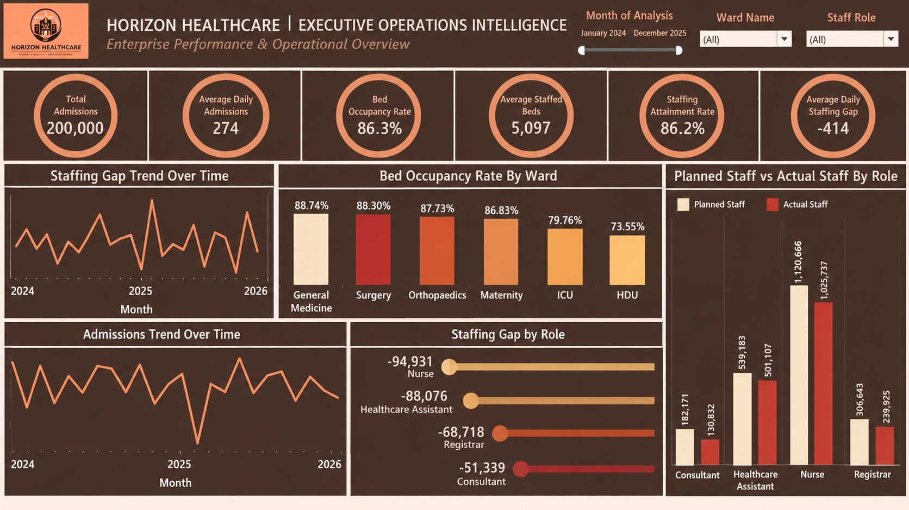
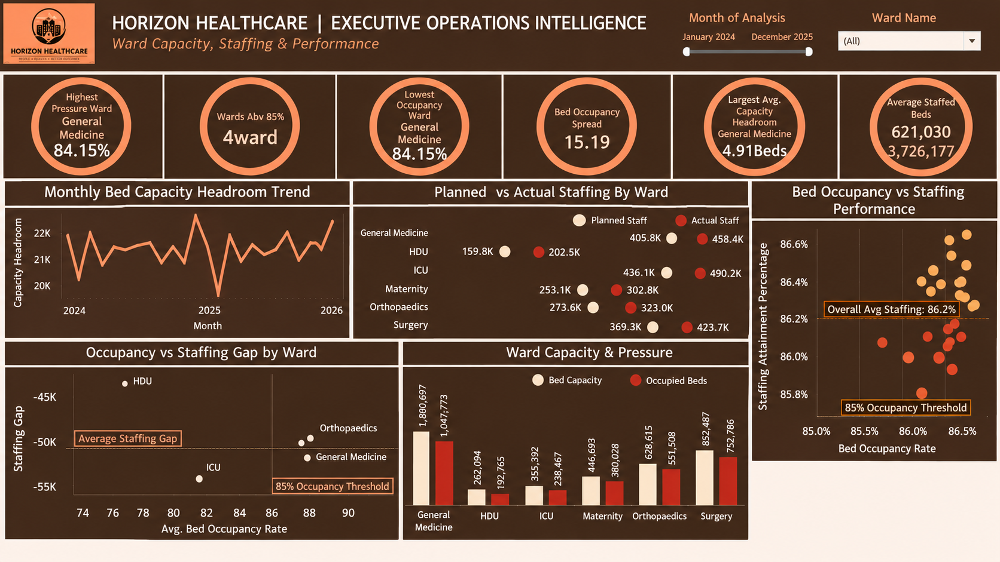
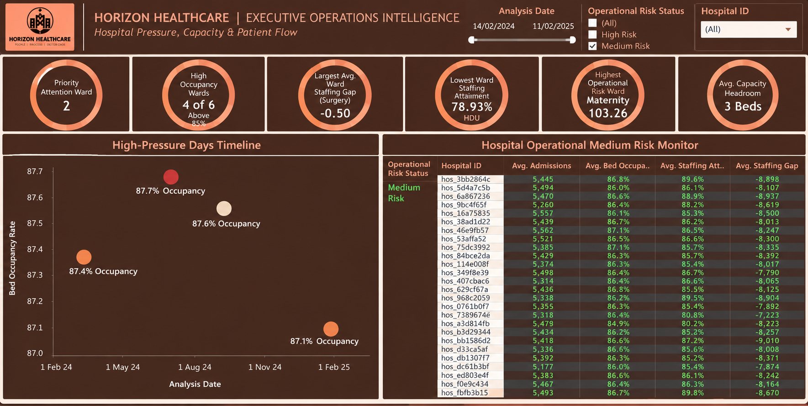
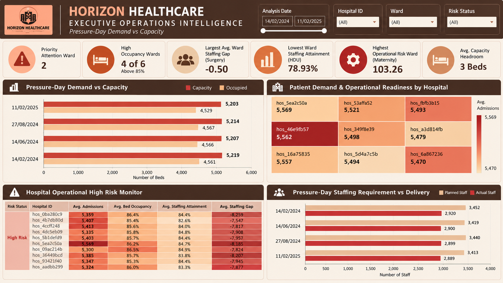
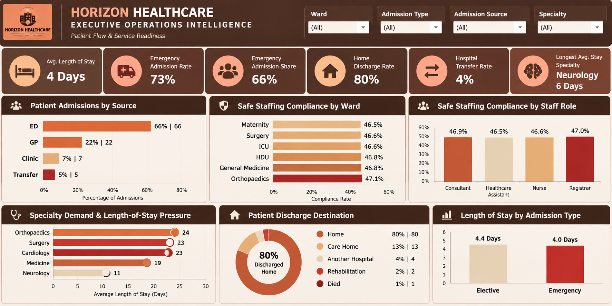

Project Overview
Healthcare operations become difficult to manage when patient demand, bed capacity and staffing are assessed separately. A hospital may have available beds but still experience operational pressure if the workforce required to support those beds is insufficient.
This project examines Horizon Healthcare's operational data to understand how admissions, bed utilisation, staffing levels and patient movement interact across hospitals and wards.
Using Microsoft SQL Server, I validated, cleaned and structured the underlying data before conducting the analysis. I then used Tableau to develop five interactive dashboards covering executive operations, ward capacity and staffing, hospital risk monitoring and patient flow.
The analysis focuses on identifying where capacity and workforce pressures are concentrated, how those pressures differ across wards, and where management attention may be required to support safer and more consistent service delivery.
Rather than treating admissions, occupancy and staffing as isolated performance indicators, the dashboards bring these measures together to support operational planning, resource allocation and risk assessment.
01. Executive Operations Overview
This dashboard provides an organisation-wide view of hospital activity, bed utilisation and workforce performance. It establishes the overall operational position before examining pressures at individual ward and hospital levels.

Key Business Findings
The analysis covers 200,000 admissions, with an average of 274 daily admissions. This level of activity establishes the scale of demand placed on hospital services and provides an important reference point for assessing available capacity and staffing requirements.
Overall bed occupancy stands at 86.3%, indicating that a substantial proportion of staffed bed capacity is being utilised. Although high occupancy may suggest efficient use of available resources, it can also reduce flexibility when admissions increase unexpectedly or patients require longer stays.
The dashboard reports an average of 5,097 staffed beds and a staffing attainment rate of 86.2%. This indicates that actual staffing falls below the planned requirement. The average daily staffing gap of approximately 414 reinforces the need to consider workforce availability alongside bed capacity.
The ward comparison shows that General Medicine has the highest displayed occupancy rate at 88.74%, followed by Surgery at 88.30% and Orthopaedics at 87.73%. These wards operate above the 85% occupancy reference used elsewhere in the analysis, suggesting less available capacity to absorb unexpected increases in demand.
At the other end of the comparison, HDU records occupancy of approximately 73.55%. However, lower occupancy should not automatically be interpreted as excess capacity. Specialist wards have different clinical requirements, staffing needs and admission patterns.
The staffing analysis reveals substantial shortfalls across workforce categories. Nursing records the largest absolute staffing gap at approximately 94,931 in the aggregated comparison, followed by Healthcare Assistants and Registrars. Consultants also show a significant shortfall relative to planned staffing.
These findings highlight an important operational distinction: bed availability does not necessarily translate into usable clinical capacity when staffing requirements are not fully met.
Management Considerations
Management should monitor occupancy and staffing together, particularly in wards operating above the 85% occupancy reference. Workforce planning should prioritise roles with persistent staffing shortfalls, while further analysis should distinguish short-term scheduling gaps from structural workforce shortages.
The next stage should also examine staffing requirements by shift, hospital and patient acuity before recommending changes to clinical staffing establishments.
02. Ward Capacity, Staffing & Performance
This dashboard examines operational pressure at ward level, comparing occupancy, capacity headroom and planned versus actual staffing. Its purpose is to identify where available resources may be insufficient to support demand consistently.

Key Business Findings
The ward-level comparison shows that occupancy pressure is not distributed evenly. Surgery, Orthopaedics and General Medicine operate at relatively high occupancy levels, while ICU and HDU show lower average occupancy. This variation is important because a single organisation-wide occupancy figure can conceal significant differences between departments.
The dashboard identifies four wards above the 85% occupancy reference. This suggests that several departments are operating with limited capacity headroom, although occupancy alone is not sufficient to determine clinical safety or operational risk.
The planned-versus-actual staffing comparison reveals shortages across the wards displayed. For example, General Medicine shows approximately 458.4K planned staffing units compared with 405.8K actual units, while ICU records approximately 490.2K planned against 436.1K actual units in the aggregated view.
These differences indicate that staffing delivery is consistently below the planned level across multiple wards. The figures should be interpreted according to the underlying aggregation and reporting period, rather than as the number of individual employees missing on a particular day.
The occupancy-versus-staffing comparison provides another useful perspective. A ward may have relatively high bed occupancy while recording weaker staffing attainment. This combination deserves closer operational review because demand and workforce availability are placing pressure on the same service.
The capacity headroom trend also illustrates how available capacity changes over time. Periods of reduced headroom may leave less flexibility to accommodate sudden increases in admissions, particularly when staffing availability is already below plan.
Overall, the dashboard demonstrates why hospital capacity planning should not be based solely on the number of beds. The workforce required to operate those beds is equally important.
Management Considerations
Ward managers should review occupancy, staffing attainment and available capacity together. Priority should be given to wards experiencing both high utilisation and recurring workforce gaps.
Management should also assess whether staffing shortfalls arise from vacancies, absence, rostering arrangements or changes in patient demand before selecting corrective actions.
03. Hospital Medium-Risk Monitor
This dashboard provides a more focused assessment of hospitals classified within the medium operational risk category. It combines admissions, occupancy, staffing attainment and staffing gaps to support targeted management review.

Key Business Findings
The dashboard identifies two priority-attention wards and reports that four of the six wards are above the 85% occupancy reference. These measures provide a starting point for identifying where operational pressures may be concentrated.
The medium-risk hospital monitor displays differences in average admissions, bed occupancy, staffing attainment and staffing gaps across hospitals. This enables management to move beyond organisation-wide averages and examine the circumstances of individual sites.
Several hospitals in the displayed medium-risk group record occupancy above 86%, while staffing attainment varies across the listed facilities. These differences matter because hospitals with similar occupancy may have different levels of workforce availability.
The high-pressure days timeline highlights selected periods with occupancy around 87.1% to 87.7%. This helps identify when capacity pressure was particularly pronounced and provides a basis for reviewing the corresponding staffing and admissions conditions.
A hospital classified as medium risk should not automatically be treated as operationally stable. The classification indicates its position under the project's risk rules, but individual indicators may still warrant attention.
The value of this dashboard is therefore its ability to support earlier review of emerging pressure rather than waiting until a hospital moves into a higher-risk category.
Management Considerations
Management should establish regular reviews of medium-risk hospitals, particularly those with persistent staffing gaps and high occupancy.
The underlying risk thresholds should be documented and validated against clinical and operational requirements. Changes in hospital risk status should also be monitored over time to identify deterioration or improvement.
04. Hospital High-Risk & Operational Pressure
This dashboard concentrates on hospitals and periods requiring more immediate management attention. It brings together high-risk classifications, patient demand, bed capacity and staffing delivery to identify where operational readiness may be under pressure.

Key Business Findings
The high-risk hospital monitor highlights facilities with elevated operational risk indicators. The comparison shows that several listed hospitals are operating with bed occupancy above 85%, alongside staffing attainment below the planned requirement.
The hospital-level table provides a more detailed view of the relationship between admissions, occupancy, staffing attainment and staffing gaps. For example, the displayed high-risk hospitals record staffing attainment figures in the low-to-mid 80% range, indicating material differences between planned and delivered staffing.
The pressure-day demand-versus-capacity comparison shows that hospitals may retain some unoccupied beds while still experiencing operational pressure. This is important because physical bed capacity is not the same as fully staffed, clinically available capacity.
The staffing requirement-versus-delivery comparison makes this distinction clearer. On selected pressure days, actual staffing is below planned staffing. For example, one displayed period shows approximately 3,452 planned staffing units against 2,920 actual units.
These gaps suggest that workforce availability should be considered when assessing whether the hospital can respond effectively to demand. However, the dashboard does not establish the clinical consequences of those shortfalls without additional patient acuity, safety and staffing information.
The patient-demand comparison also shows differences between hospitals. Some facilities handle substantially higher admissions than others, which may influence the level of resources required.
Taken together, the findings support a more targeted approach to operational risk management, with attention directed towards hospitals where demand, occupancy and staffing pressures occur together.
Management Considerations
High-risk hospitals should receive priority operational review, including assessment of staffing coverage, available bed capacity and demand patterns during pressure periods.
Management should investigate the reasons for staffing shortfalls, consider appropriate contingency arrangements and review whether existing escalation procedures provide sufficient warning before capacity pressures intensify.
Any clinical staffing decisions should be informed by qualified clinical leadership and patient acuity requirements, not dashboard thresholds alone.
05. Patient Flow & Service Readiness
The final dashboard examines how patients enter hospital services, how long they remain and where they go after discharge. It also compares safe staffing compliance across wards and staff roles to provide a broader view of service readiness.

Key Business Findings
The dashboard reports an average length of stay of four days, an emergency admission rate of 73% and an emergency admission share of 66%. These are distinct measures and should be interpreted according to their respective definitions.
Emergency Department admissions account for approximately 66% of the admission-source distribution, followed by GP referrals at 22%. Clinic referrals contribute 7%, while transfers account for 5%. This indicates that emergency care is a major entry point into the hospital system.
The distribution is important for capacity planning because emergency admissions are generally less predictable than scheduled activity. However, the dashboard alone does not establish how much of the recorded demand could have been prevented or redirected.
The length-of-stay comparison shows elective admissions averaging approximately 4.4 days, compared with four days for emergency admissions. This difference deserves further examination by specialty, case complexity and patient characteristics before drawing conclusions about operational efficiency.
The dashboard also identifies Neurology as the specialty with the longest average stay, at approximately six days. Longer stays can affect bed turnover and available capacity, although the clinical reasons for extended admissions must be considered.
Approximately 80% of recorded discharges are to home, followed by 13% to care homes, 4% to another hospital, 2% to rehabilitation and 1% recorded as deaths. These figures provide context for understanding discharge pathways and the potential coordination required with services outside the hospital.
Safe staffing compliance is approximately 46% to 47% across the displayed wards and staff roles. This measure is different from the overall staffing attainment rate reported elsewhere in the project and should not be treated as the same KPI.
The relatively consistent safe staffing compliance figures across wards suggest that the issue may extend beyond one department, although further investigation of the calculation rules and underlying staffing records would be needed to confirm the scale and nature of the problem.
Overall, this dashboard connects patient movement with operational readiness. It shows why admissions, length of stay, discharge patterns and staffing should be considered together when reviewing hospital performance.
Management Considerations
Management should review admission patterns and discharge pathways to identify opportunities for better patient-flow coordination. Specialties with longer average stays should be examined in greater detail, accounting for clinical complexity and patient needs.
Safe staffing compliance should also be monitored separately from staffing attainment, with clear definitions and appropriate clinical oversight.
Overall Business Conclusion
The Horizon Healthcare analysis reveals that operational pressure is not determined by patient demand or bed occupancy alone. It emerges from the relationship between admissions, available capacity, workforce delivery and the movement of patients through hospital services.
Across 200,000 admissions, the organisation records an overall bed occupancy rate of 86.3% and staffing attainment of 86.2%. These figures indicate substantial utilisation of available resources alongside a continuing gap between planned and actual staffing.
Ward-level comparisons reveal that capacity pressure is unevenly distributed, while the hospital risk dashboards identify facilities where occupancy and workforce shortfalls warrant closer review.
The patient-flow analysis adds another dimension by showing the importance of emergency admissions, length of stay, discharge pathways and safe staffing compliance.
The central management implication is that hospital performance should be assessed through connected operational measures, rather than relying on individual headline KPIs.
Recommended Business Priorities
- Monitor bed occupancy and staffing attainment together, especially in wards consistently operating above the 85% occupancy reference.
- Investigate recurring staffing shortfalls by role, ward, hospital and shift to distinguish temporary scheduling issues from structural workforce gaps.
- Strengthen operational risk monitoring for hospitals where high occupancy and reduced staffing availability overlap.
- Review patient-flow patterns, including emergency demand, length of stay and discharge coordination, to understand their implications for available capacity.
- Maintain clear definitions for staffing attainment, safe staffing compliance, capacity headroom and operational risk indicators to support consistent management reporting.
- Use the dashboards to support multidisciplinary operational reviews, with clinical leaders validating the implications of any proposed changes to staffing or patient care.
The project demonstrates how SQL Server and Tableau can be used to examine complex healthcare operations and provide a structured basis for identifying pressures, prioritising investigation and supporting evidence-informed management decisions.